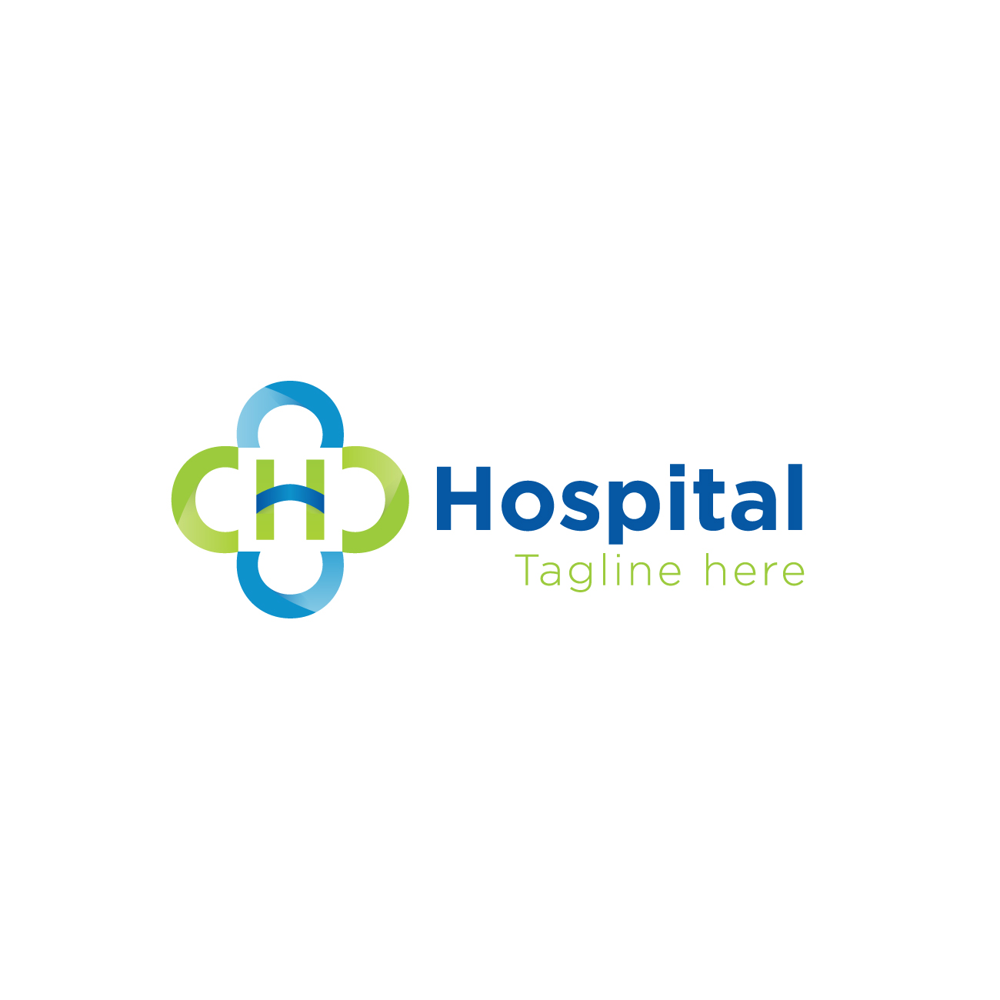

Clínica de Atendimento Bem-vindo à Clínica de Atendimento, onde cuidamos da sua saúde com dedicação e excelência. Nossa clínica é um espaço dedicado ao seu bem-estar, oferecendo uma ampla gama de serviços médicos e terapêuticos para atender às suas necessidades. Nossa equipe é formada por profissionais altamente qualificados e comprometidos em proporcionar o melhor atendimento possível. Aqui, você encontrará médicos especialistas em diversas áreas, prontos para diagnosticar, tratar e acompanhar sua saúde com cuidado e atenção. Além dos serviços médicos, nossa clínica também oferece tratamentos terapêuticos para promover o equilíbrio físico, mental e emocional. Contamos com uma estrutura moderna e confortável, pensada para oferecer conforto e segurança a todos os nossos pacientes. Na Clínica de Atendimento, seu bem-estar é nossa prioridade. Estamos aqui para cuidar de você em todas as fases da vida. Agende sua consulta e comece sua jornada em direção a uma vida mais saudável e feliz. Estamos ansiosos para recebê-lo!
